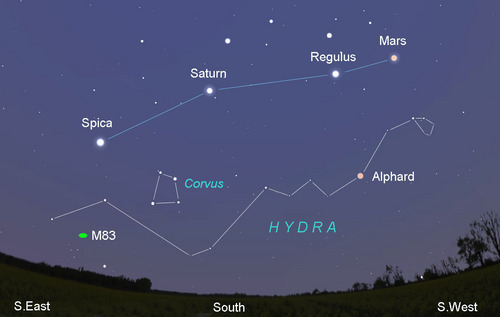

Messier 83 is one of the billions of galaxies in space. Being a spiral galaxy, it is located in the Hydra constellation approximately 15 million light years from the Milky Way. Astronomers also call this galaxy Southern Pinwheel Galaxy because of its spiral arms. It is one of the brightest galaxies in the sky.
In order to locate M83 in the Northern Hemisphere, you must look towards the Hydra Constellation. Once you spot Hydra, follow the line of stars down towards the east towards a star known as Menkent. M83 will be located below. It may be difficult and take some time to find, however once located, you will be in awe!
